One family, loud and calm. The colours, the type, the mark and the pieces of Snanify, and the two rules every line is written under.
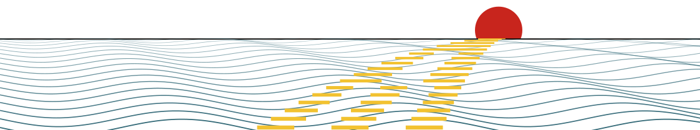
A digital snan. At an hour the panchang names, you sit for three minutes with a sacred river in India as it runs this morning, make your own sankalp, and send the family a Sankalp Patra with their names on it.
For Indians and the Hindu diaspora far from their river, thirty and over: the US, the UK, Canada, the Gulf, Singapore, Australia. English and Hindi. Most arrive on a phone, at six in the morning, in bed.
The pack, the price and the press are the clearest things on a selling page.
Three calm minutes, the same every morning. Only the river changes.
The Patra is made to land well in a family WhatsApp group.
| Part | Length | What happens |
|---|---|---|
| The reading | 15s | The river’s flow today, and how it ranks for this time of year |
| The breath | 45s | The river rises for four seconds and falls for six |
| The sankalp | 11s | Your own words, held under your thumb while the ink fills |
| The stillness | 60s | The screen goes near black over the night river |
| The mark | 20s | One line writes itself into your register, and the sheet is ready to send |
The practice is the person’s own. Every line keeps priests, ceremonies at a ghat and offerings made on anyone’s behalf out of the picture.
Speak of what is real: the river, the sky, the sankalp, the family’s names. Karma, sins, blessings and the soul stay out of the copy.
Beyond those two, sell the thing. Proud, plain, active. These four are true, so say them loudly:
Modelled discharge from Copernicus GloFAS through Open-Meteo, one value a day. A model at a grid cell, never called “measured”.
Tithi, nakshatra, the moon and the muhurat, computed at each ghat and checked against Drik Panchang.
The person states an intention, in their own words. That is a real practice.
Six real places with real traditions: the Ganga, the Yamuna, the Triveni, the Godavari, the Shipra, the Kaveri.
Second person, present tense. “Do your first snan today!” “Send it to the family.”
One idea a sentence, most under twelve words, numbers as digits. Many readers meet English as a third language, at 6 a.m.
The river is a presence, its name capitalised and in sindoor. Jokes, slang and emoji stay out of the product. One exclamation mark a screen at most.
“The snan”, the “Sankalp Patra”, and a pack is its count: “Eleven mornings”. Snan, sankalp, ghat, tithi and muhurat stay untranslated. Hindi uses everyday words and “आप”.
Nobody stands in the water for you.
The practice is yours.
The one exception removes a buyer’s fear in two words: “No subscription.”
| Say it boldly | Leave it out, however bold |
|---|---|
| “The Ganga, as it runs this morning.” | Anything a priest or a person does for them |
| “Your Ganga snan. From home.” | A dip, a bath, a ritual performed at the ghat |
| “Your family’s names, at the river.” | Punya, blessings, sins, karma, the soul |
| “Three minutes. Every morning.” | “As good as being there”, “holy water” |
| “Fuller than usual for this time of year.” | “Live” footage, “measured at the ghat” |
| “Eleven mornings for eleven.” | Statistics about other users |
Em dashes stay out of every line: use a comma, a colon, a full stop or parentheses. In rupees the hook reads “Eleven mornings for ₹501.”
Widths 1 : 2 : 4 : 2 : 1. Teal stepping out of paper.
Flat colour, one job each. Ink sits on marigold, never marigold on paper (about 1.5:1). White sits on sindoor. Marigold is the same by day and by night. Ads use the day column; every value, night included, is in brand/tokens.json.
Fuller than usual for this time of year.
इस समय के हिसाब से सामान्य से भरी।
| Family | Weights | Job |
|---|---|---|
| Eczar | 400 to 800 | Display: headlines, headings, the wordmark, the seal. Latin and Devanagari. fonts.google.com/specimen/Eczar |
| Martel Sans | 400, 600, 700 | Text: body, buttons, labels, tables. Latin and Devanagari. fonts.google.com/specimen/Martel+Sans |
| Noto Serif Devanagari | 400, 600 | Hindi on drawn images (the Patra, link cards), so conjuncts stack: अनिल शर्मा |
Clear space: half the mark’s height on every side (the dashed line). Smallest: the masthead’s lockup, a 30px mark beside a 24px word. Below 32px the mark uses its small cut.
An ink ring on paper, a sindoor sun cut by an ink horizon, three teal bands. The wordmark is Eczar 800 at -0.015em, its i dotless under a sindoor bindu.
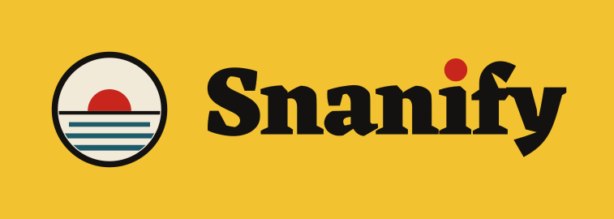
SVG and PNG of each, and the mark and the wordmark alone, are in brand/logo/.
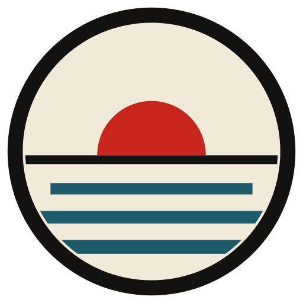
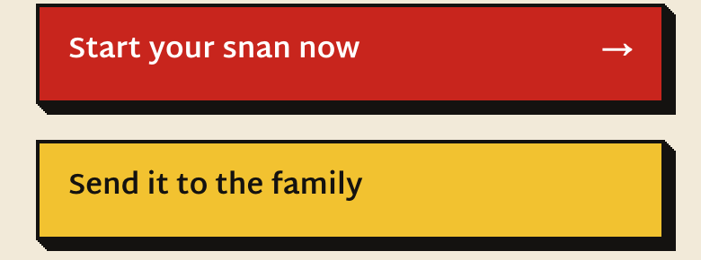
A sindoor block on a hard ink wall 6px deep. It sinks flush when pressed. The marigold face is only “Send it to the family”.
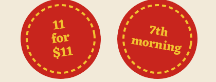
A round sindoor stamp, marigold Eczar 800, a dashed ring, turned a few degrees. The price, or the morning badge.
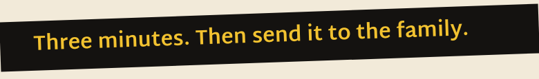
Ink with marigold words, turned -2°, running off both edges. It says the one thing to do.
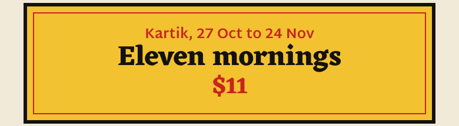
The matchbox label: marigold, a 3px ink frame, a thin sindoor rule inside.
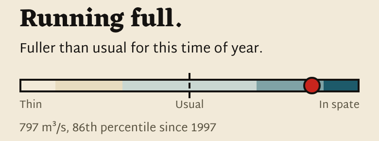
How the river runs, without numbers: five fills, a dashed “usual”, a sindoor dot for today. The exact figure sits small beside it.
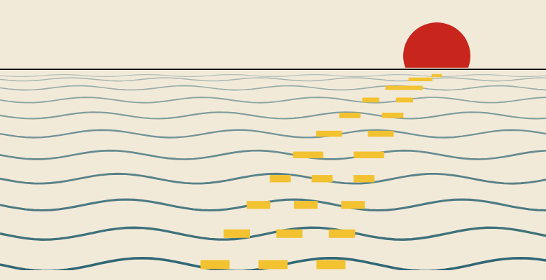
Teal waves, an ink horizon, the sindoor sun sitting on it, a marigold path of light. The brand’s living element.
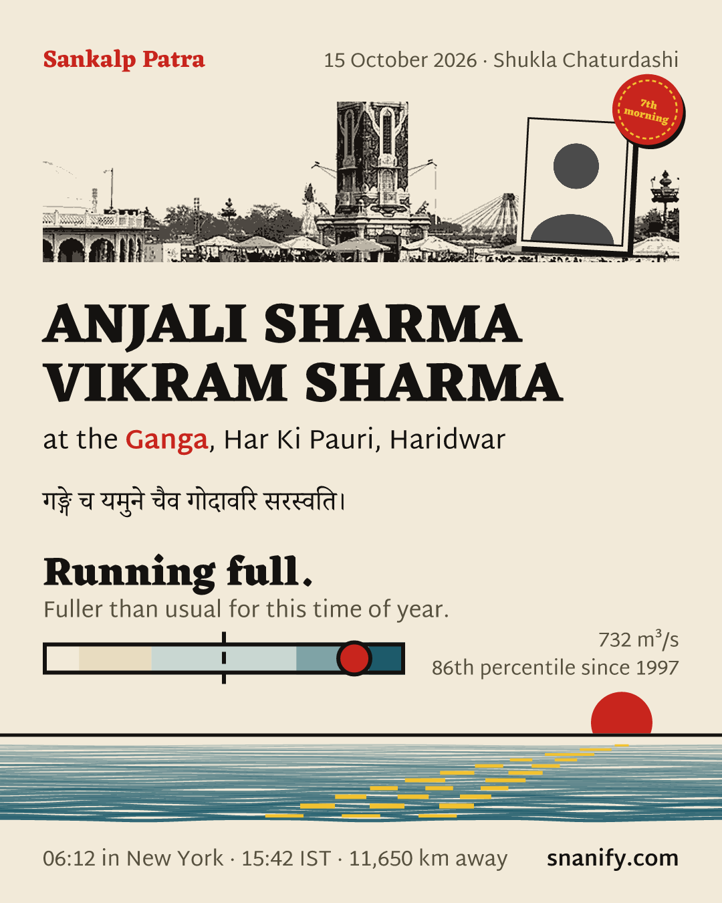
One sheet per completed morning, made to land in the family WhatsApp. Eleven mornings make eleven sheets to send.
The sheet sells nothing. The band, the label, a price and a pack count stay off it.
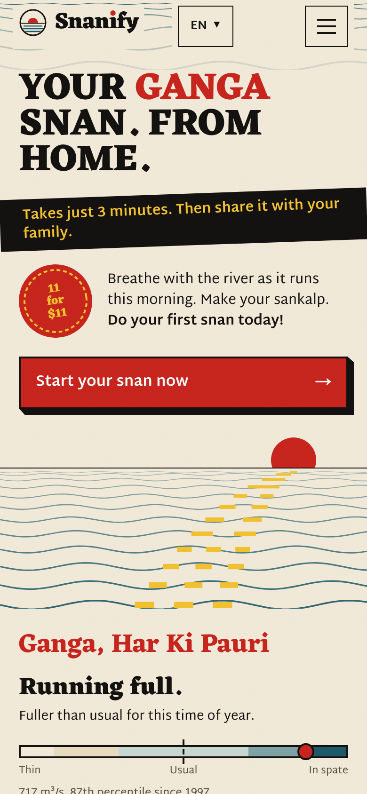
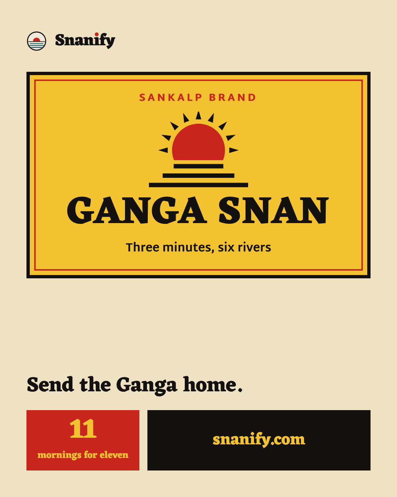
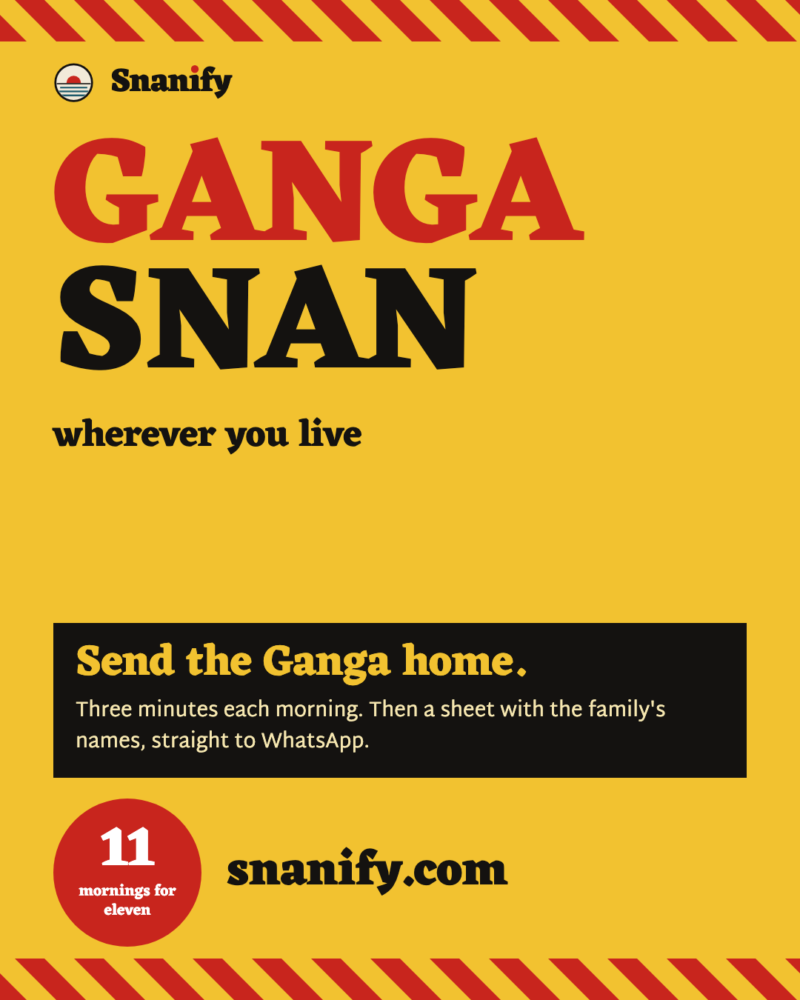
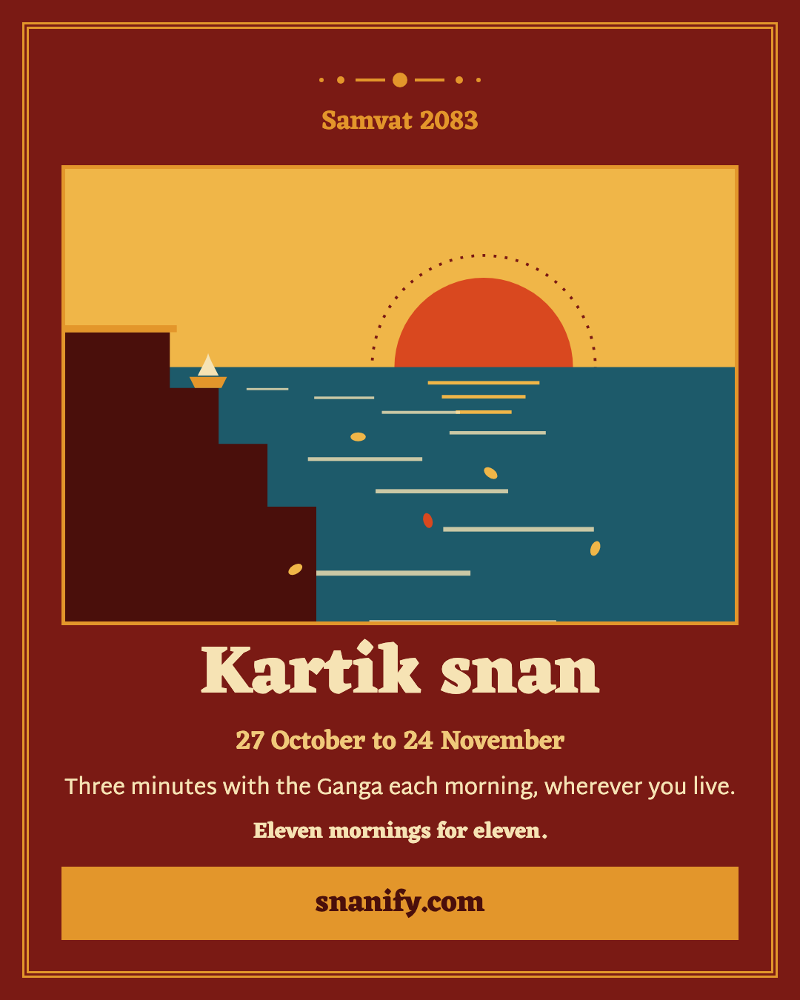
| The campaign layer, loud | The site, calm | |
|---|---|---|
| Ground | Full-bleed marigold or sindoor | Paper, colour in its one job |
| Type | Capitals large and stacked, filling the frame | One capitals headline, then sentence case |
| Pieces | Hard offsets, starburst seals, tilted labels, sashes | The press, seal, band and label, each in its limit |
| Held in both | The palette, Eczar and Martel, the mark, the two rules, flat colour and square corners | |
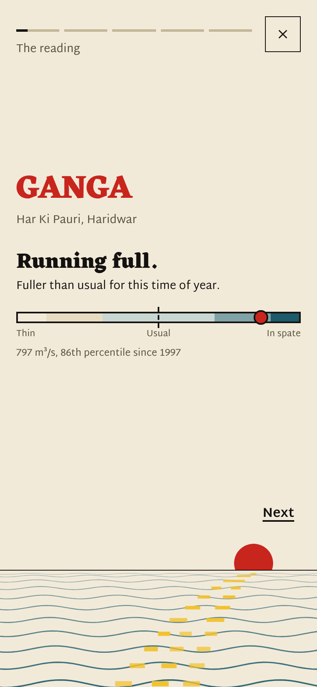
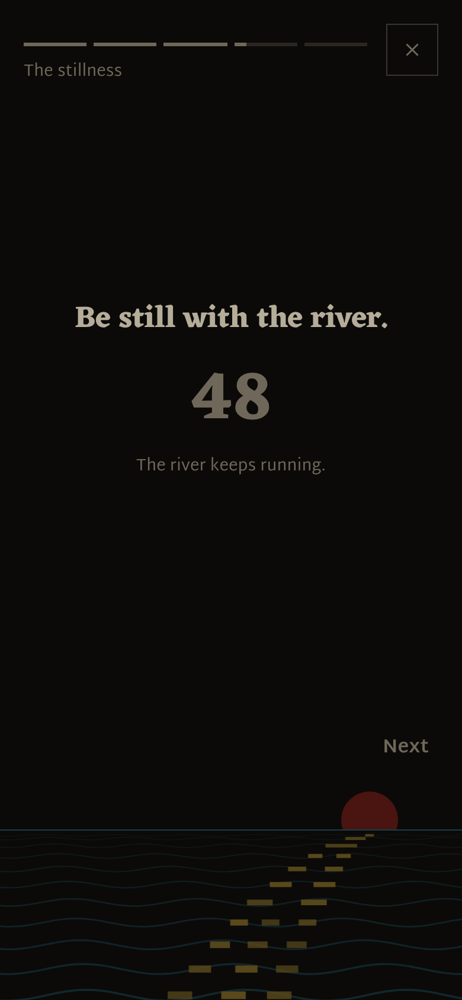
Over ninety percent of readers arrive on a phone, at six in the morning, in bed.
| Source | What it holds |
|---|---|
brand/README.md | This book on one page, with the prices and the Meta rules |
brand/tokens.json, brand/logo/ | Every colour and type role, and the logo files. npm run brand writes them from the app |
DESIGNSYSTEM.md | The canonical design system: every surface, the motions, the logo’s geometry |
CLAUDE.md | The two rules, the voice, the locked decisions, the prices |
ads/README.md, ads/src/ | The Meta campaign, its copy in English and Hindi, and the ad renderers |
docs/design/v3-mockups/ | The approved v3 mockups and surface checks |
docs/superpowers/specs/2026-10-17-design-system-v3-design.md | The approved v3 spec, with the owner’s choices |
brand/book/ | The source of this book. npm run brand-book prints it again |
www.snanify.com